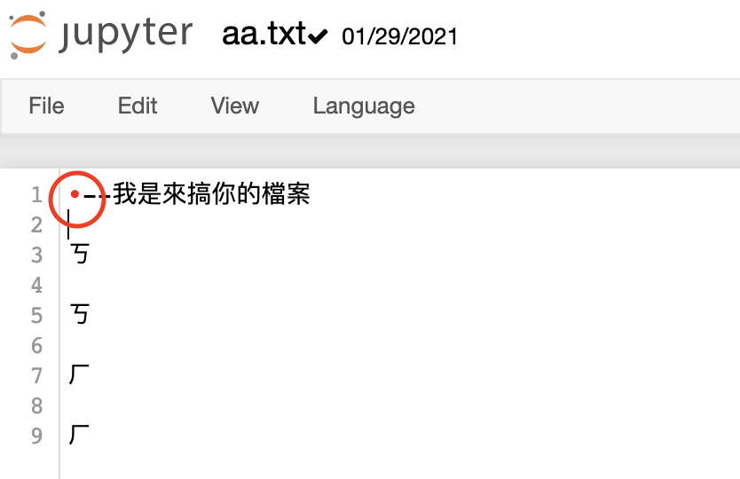

Python 的基礎 - 檔案操作¶
Path 檔案路徑¶
路徑當然指找到檔案的位置
Windows 常見路徑 ： C:\"Program File(x86)"\Microsoft\
Mac (Unix Like) 常見路徑 ： /Users/fiammahsu/Workplace
Note
我們的 NoteBook Server 是 Ubuntu 18.04
所以使用的是下面的路徑表示方法
Tip
這邊介紹一個 NoteBook 好用的地方
在 NoteBook 中的 python code block 中 使用 ! 表示使用 OS Command
!whoami
我們就先來找檔案
檔案放在 PROJECT_FOLDER / PartI / file / wiki_pytho.txt
Caution
NoteBook 開啟時 .ipynb 檔案所在位置 即為當前的 根目錄
若你有點混亂的話，隨時使用 !pwd 搭配 !ls 來確認當前所在目錄
Windows 的環境，請使用 !cd 和 !dir 來達到相同效果
# 使用 「 ! 」 開頭 可以呼叫 shell & cmd
# MacOS / Linux
!pwd
# Windows
!cd
# 確認 檔案在當前目錄
!ls file/wiki_python.txt
讀檔¶
確認了檔案所在的路徑後
我們使用 open 來打開檔案
把檔案的路徑當成 String 傳入
wiki = 'file/wiki_python.txt'
# open 第三個參數 指定使用什麼 Mode 來「 開啟 」檔案
f = open(wiki, 'r', encoding='UTF-8')
content = f.read()
print(content)
Note
關於 open 使用的 Mode
有三種
r讀檔，read。 若沒有指定 mode， 預設將會是這個w寫檔，write。 若檔案不存在，會建立一個檔案a寫檔，append。跟w不同在於，一個會加在檔案最後，一個則直接全部覆蓋
小練習 1¶
剛剛開啟的檔案
我想要算出 所有單詞的出現頻率
思考一下
首先，我該怎麼算頻率
我讀進來的檔案，是一整個
字串，因此要先切割
參考
第二個比較簡單
字串有 split 的 function
而第一題我用 字典Dictionary
用 key 表 單詞 ， value 表 頻率
我們運用 dict 中 key不會重複的特性
小練習 1 參考解答¶
wiki = 'file/wiki_python.txt'
f = open(wiki, 'r', encoding='UTF-8')
content = f.read()
# print(content)
# 所有字詞小寫
lower = content.lower()
counter = {}
# 預設 split by SPACE
# 這串是來自 string.punctuation
replace_string = '!"#$%&\'()*+,-./:;<=>?@[\\]^_`{|}~'
for s in replace_string:
# 替換所有 非字詞 如上的字元
lower = lower.replace(s, '')
iter_content = lower.split()
for term in iter_content:
# Dict.get(KEY, DEFAULT_VALUE)
counter[term] = counter.get(term, 0) + 1
counter
# 簡單的 word count 計算
寫檔¶
剛剛介紹過的 open 這次使用 Mode w 來寫檔
Caution
寫檔時，最好額外指定編碼（encoding）
若沒有指定，會使用 OS 預設的編碼來處理
MacOS(Unix) –> UTF-8
Windows –> CP950
# 不指定 encoding --> OS系統預設
f = open('file/寫檔囉.txt', 'w', encoding='UTF-8')
f.write('你好')
f.write(' 沒有換行喔')
f.write('\n手動寫換行')
f.write('\r\n--windows 換行喔')
# 關閉檔案資源
f.close()
小練習 2¶
剛才我們已經算出 wiki_python.txt 中的 word count
現在我們把結果寫到文字檔中
格式就這樣吧
WORD1 COUNT
WORD2 COUNT
WORD3 COUNT
思考一下
首先，先想寫檔的格式 這次已經先給了
我們計算 Word Count 是用
Dictionary Object， 要如何 for loop Dic Object？
Warning
不會是直接 for loop Dict ！
小練習 2 參考解答¶
# 記得寫檔案位置 跟開檔案位置 不要一樣 不然會覆蓋過去喔
f = open('file/word_count.txt', 'w', encoding='UTF-8')
for k, v in counter.items():
f.write(k)
f.write(' ')
f.write(str(v))
f.write('\n')
f.close()
小祕技 現在略過也沒關係的
應該會發現，寫出來的 Word Count 沒有被排列過
是的 Dict 預設沒有順序
但還是可以重新排列 Dict
這裡我們用一個很進階的 function
sorted(iterable, key=None, reverse=False)
從 function 參數中可以看到
第一個參數是 iterable ，代表要傳入可遞迴的 OBJECT，所以傳入我們要排列的
Dict.items()第二個則問你，要用什麼當成 key，我們想要用 frequency 當作排序依據
第三個則是根據給的 key 排列出來後是否要相反順序
Note
注意到第二個 key 要傳入的其實是一個 Function or Callable Object
那我們這邊的排序，也不需要到 Function， 但必須符合 Callable Object
僅需指定 Key 為 Frequency
即 counter 的 value
故使用 匿名函式 Lambda
匿名函式的用法
lambda arguments : expression
使用上如下
counter = {k: v for k, v in sorted(counter.items(), key=lambda item: item[1])}
Encoding 問題¶
剛才已經稍微提到 OS Default Encode 問題
以下條列
Windows10 中文預設寫入 –> CP950
MacOS / Linux 中文預設寫入 –> UTF-8
不同 Encode 間 在 python 內是能夠轉換的
實際上，使用 open 指定 encoding 時，
python是這樣幫我們做的
f = open(file, encoding='UTF-8')
f.read()
# ↓↓↓ 等同於
f = open(file, 'rb')
f.read().decode('UTF-8)
Note
open 還有一種額外 讀/寫 的模式 b Mode
代表 寫入/讀取 使用 Byte Object
故 python內，轉換 Encoding，就是 –> 讀入Byte –> 轉成String(一開始的Encoding) –> 轉成Byte(寫出的Encoding)
f = open('file/寫檔囉.txt', 'r', encoding='UTF-8')
content = f.read()
f = open('file/寫檔囉_big5.txt', 'w', encoding='big5')
f.write(content)
f.close()
¶
上面便是簡單的 Encode 處理
不過，如果遇到 Excel 檔案時，會有些小問題
MicroSoft Excel UTF-8 中文 –> UTF-8 with BOM
可以先打開 file 下的 aa.txt 檔案來看看
應該會看到一個奇怪的字元

實際用 python 來看看到底是什麼吧
# b Mode 可以搭配 'w' or 'a' or 'r'
# 'rb' 則為 Read Byte Mode
open('file/aa.txt', 'rb').read().decode('UTF-8')
可以發現到 前面有個 \ufeff
而這個東西實際的 Byte 是
print('\ufeff'.encode('UTF-8'))
print('轉換正確編碼就會變成 ： {}'.format(b'\xef\xbb\xbf'.decode('UTF-8-sig')))
Note
這個東西似乎叫 Byte-Order Mark (BOM)
Excel 開啟 CSV 檔案時，可以識別這個東西
之後便可以正常顯示 UTF8 中文
不過你不會希望在 .btq 或 .perl 檔案中看到他
他會讓你錯都不知道錯在哪裡 ！